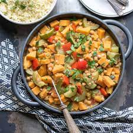

Tagine

Description
Spicy lamb tagine is a real crowd pleaser. It serves six so is great for feeding the family or a group of friends, or you can freeze it in smaller batches so that it'll do several nights
Ingredients
- olive oil
- 1kg lamb neck fillet, cut into chunks
- 2 onions, halved and thinly sliced
- 3cm piece ginger, finely grated
- 1 tbsp tomato purée
- 350ml chicken stock
Steps
- Mix the marinade ingredients with 1 tbsp olive oil, season and toss with the lamb. Cover with clingfilm and chill for at least 2 hours (or overnight).
- Heat the oven to 160C/fan 140C/gas 3. Heat a splash of olive oil in a pan and cook the onion until really soft and golden. Add the ginger and cook for a minute then tip in the lamb and all of its marinade. Cook, turning the lamb around in the onions and spices for about 5 minutes
- Add the tomato purée, stock, tomatoes, cinnamon, dates and olives. Bring to a simmer then put on a lid and cook for 2 hours. To freeze, cool completely and spoon into freezer-proof tubs or bags. Defrost before reheating thoroughly. Serve with couscous and scatter with coriander leaves.